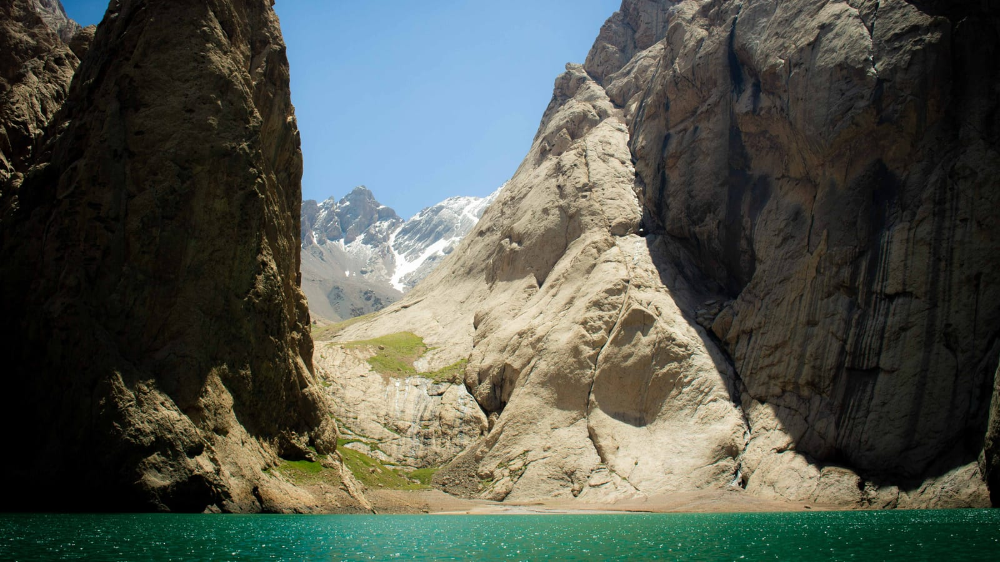

Home / Tours
From one-day escapes to two-week expeditions. Every trip is small-group or private, led by local guides, and can be tailored to your dates.
Build your trip39 tours · all small-group or private
No tours in this category yet, but we can build one for you. Request a custom trip
Every Kyrgyzstan tour here is run by our own local team: horse treks to Song-Kol, road trips around Ysyk-Kol and Kel-Suu, trekking to Ala-Kol, winter rides and family-friendly routes. Use the filters to narrow by style, length or season, from 2-day tasters to the full 12-day Best of Kyrgyzstan.
None of this is set in stone. Tell us your dates, group and interests, and we shape the route, pace and accommodation around you at no extra cost. Prices come as a personal quote because group size and season change the math; enquiring is free and there is no prepayment.
Can't decide?
Every tour here can be customised, combined or stretched. Share your dates and a local expert replies within 24 hours. Free, no prepayment.